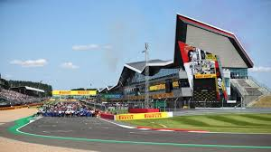

Todo lo que necesitás saber para disfrutar del Gran Premio de Austria
Este fin de semana se correrá la carrera número doce del calendario mundial de Fórmula 1 en el emblemático circuito de Silverstone, ubicado en Northamptonshire, Inglaterra.
El trazado fue fundado en 1943 y es uno de los más longevos e históricos de la
categoría ya que albergó la primera carrera inaugural de la Fórmula 1 en el año
1950. Además, tiene una distancia total de 306,198km, 58 vueltas y 18 curvas con
dos zonas DRS en la quinta y en la decimocuarta respectivamente.
El máximo ganador de este Gran Premio es el local Lewis Hamilton con nueve
victorias, seguido de Jim Clark y Alain Prost con cinco triunfos cada uno.
A su vez, el piloto que hoy milita en la escudería Mercedes es el actual ganador en
esta pista, habiendo logrado esto en la edición de 2024. Max Verstappen y Lando
Norris completaron el podio en esa ocasión. El también britanico George Rusell es
quien tiene el récord de la vuelta rápida en carrera con un tiempo de 1 minuto 25
segundos y 819 milésimas.
¿Cómo le fue a Franco en Silverstone?
La primera experiencia del pilarense en este histórico circuito fue en la Fórmula 3
de 2022 donde salió 13° en la Sprint Race y no pudo completar la Future Race.
Un año después mejoró su rendimiento, logrando el primer lugar y que el himno
nacional argentino sonara fuerte en tierras británicas.
Ya en 2024, Franco compitió en Fórmula 2 con la academia de Williams y se
posicionó 5° y 4°.
En su estreno en la máxima, el argentino no corrió en la gran carrera del domingo
pero si pudo formar parte de los entrenamientos libres arriba del monoplaza de
Williams cuando le tocó reemplazar a Logan Sargeant. En estas prácticas terminó
en el puesto 18 completando 24 vueltas.
Cabe recordar que hubo tres argentinos que se consagraron en este Gran Premio.
Uno de ellos fue José Froilán González que se quedó con el primer lugar en dos
oportunidades en los años 1951 y 1954. También ganaron en Silverstone Juan
Manuel Fangio en 1956 y Carlos Reutemann en 1978.
Cronograma del fin de semana
Viernes
Prácticas Libres 1: 8:30 hrs
Prácticas Libres 2: 12:00 hrs
Sábado
Prácticas Libres 3: 7:30 hrs
Clasificación: 11:00 hrs
Domingo
Carrera: 11:00 hrs